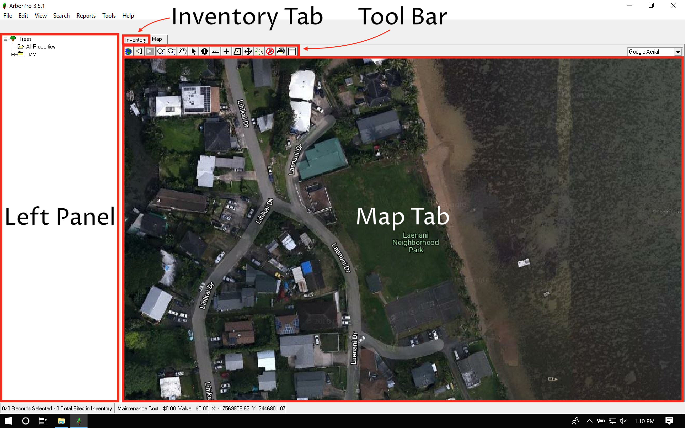

Chapter 6 The Four Main Components
The ArborPro interface can be broken down into four sections:
- The map tab
- The inventory tab
- The left panel
- The tool bar

Selecting the inventory tab will display the data as a spreadsheet with columns and rows. For users comfortable with excel, the inventory tab should look pretty familiar4.

Note that no data is displayed in the inventory view because the screenshot was taken from a fresh ArborPro install with an empty database.↩